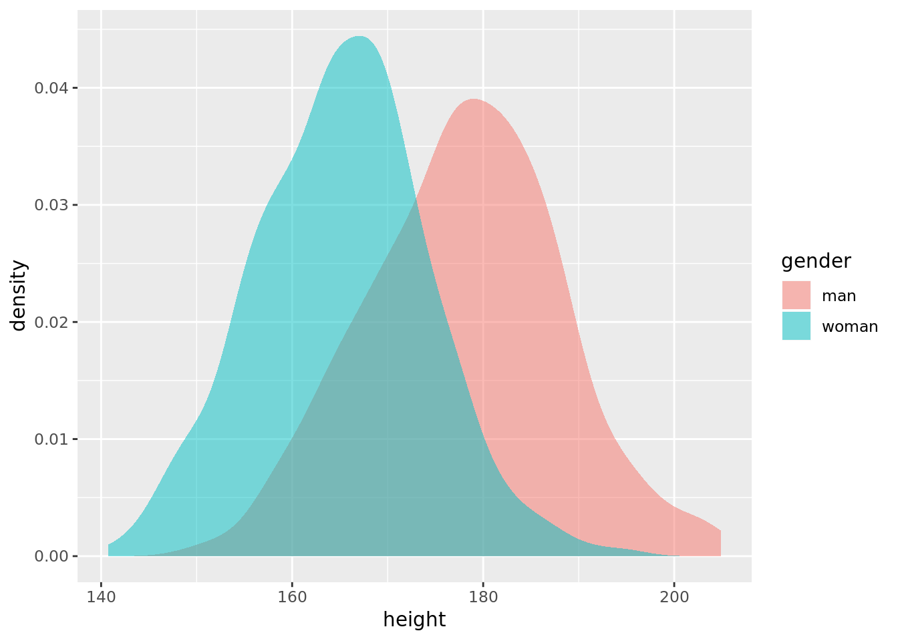

Chapter 9 EM algorithm
This chapter is based on lectures given by Professor Sivan Leviyang on September 29 and October 6, 2015 for MATH-611 Stochastic Simulation at Georgetown University.
9.1 Motivation
Suppose that we measure the height and weight of a sample of adult men, adult women, and children. Let \(\mathbf{w}^{\left(i\right)}\in\mathbb{R}^{2}\) be the height and weight of the \(i\text{th}\) person in the sample. Suppose that our data become corrupted, and we lose the age and gender for each \(\mathbf{w}^{\left(i\right)}\), i.e., we do not know whether the \(i\text{th}\) subject was an adult man, an adult woman, or a child. Then, a natural goal would be to attempt to classify the data points to regain this information.
Let \(\bar{\mathbf{w}}_{1}\), \(\bar{\mathbf{w}}_{2}\), and \(\bar{\mathbf{w}}_{3}\) be the means for the men, women, and children, respectively (and recall that each \(\bar{\mathbf{w}}_{i}\) is a point in \(\mathbb{R}^{2}\)). Because our data were corrupted, we do not know the \(\bar{\mathbf{w}}_{i}\) a priori. Our task then is to choose each \(\bar{\mathbf{w}}_{i}\) and to assign each sample \(\mathbf{w}^{\left(i\right)}\) to a class (man, woman, child), so that
\[ a\left(i\right)=\begin{cases} 1, & \text{if the }i\text{th sample is a man}\\ 2, & \text{if the }i\text{th sample is a woman}\\ 3, & \text{if the }i\text{th sample is a child} \end{cases}. \]
Suppose further that we wish to choose the \(\bar{\mathbf{w}}_{i}\) and make the assignments \(a\left(i\right)\) in some principled fashion. Let the error associated with the assignments be
\[ \mathrm{Err}\left(\bar{\mathbf{w}}_{1},\bar{\mathbf{w}}_{2},\bar{\mathbf{w}}_{3},\mathbf{a}\right)= \sum_{i=1}^{N}\left\Vert\mathbf{w}^{\left(i\right)}-\bar{\mathbf{w}}_{a\left(i\right)}\right\Vert^{2}, \]
where \(\mathbf{a}=\left(a\left(1\right),\ldots,a\left(N\right)\right)\). We can interpret the error as the sum of the squared assignment errors, where the \(i\text{th}\) assignment error is the distance between \(\mathbf{w}^{\left(i\right)}\) and the mean of the group to which it is assigned. Our goal then is to minimize the assignment error.
9.1.1 \(k\)-means
Observe that \(\bar{\mathbf{w}}_{i}\in\mathbb{R}^{2}\), and that \(\mathbf{a}\in\left\{1,2,3\right\}^{N}\), i.e., \(\mathbf{a}\) is a vector of length \(N\) whose possible values are 1, 2, and 3. It is not immediately clear that techniques previously introduced for optimization in \(\mathbb{R}^{d}\) will be helpful given the discrete nature of \(\mathbf{a}\). We now introduce a new classification algorithm, \(k\)-means.
- Choose initial assignments \(\mathbf{a}^{\left(0\right)}\) at random.
- Given \(\mathbf{a}^{\left(0\right)}\), calculate new means \(\bar{\mathbf{w}}_{i}^{\left(1\right)}\).
- Given \(\bar{\mathbf{w}}_{i}^{\left(1\right)}\), calculate new assignments \(\mathbf{a}^{\left(1\right)}\).
- Repeat steps 2-3 until convergence (the assignments do not change from one iteration to the next).
9.1.1.1 Convergence
We now consider whether this algorithm will, in fact, converge. Recall that a descent algorithm applied to some objective function \(f\left(x\right)\) satisfies \(f\left(x^{\left(1\right)}\right)\geq f\left(x^{\left(2\right)}\right)\geq f\left(x^{\left(3\right)}\right)\geq\cdots\). Consider step 2 of the algorithm, where we calculate the group means given the assignments. Let \(\mathcal{M}\) be the set of all men, and suppose that \(\left|\mathcal{M}\right|=M\), i.e., \(M\) of the samples are men. Then, we can minimize the error for the men by solving
\[ \min_{\bar{\mathbf{w}}_{1}}\sum_{i\in\mathcal{M}}\left\Vert\mathbf{w}^{\left(i\right)}-\bar{\mathbf{w}}_{1}\right\Vert^{2}. \]
To ease notation, and without loss of generality, suppose that the samples are ordered such that the first \(M\) correspond to the men, so that we can simply evaluate the above sum from \(i=1\) to \(M\). We will now minimize this analytically. Letting
\[ Q\left(\bar{\mathbf{w}}_{1}\right)=\sum_{i=1}^{M}\left\Vert\mathbf{w}^{\left(i\right)}-\bar{\mathbf{w}}_{1}\right\Vert^{2}, \]
note that we can minimize the error by solving
\[ \mathbf{0} = \nabla Q\left(\bar{\mathbf{w}}_{1}\right) = \nabla\left(\sum_{i=1}^{M}\left\Vert\mathbf{w}^{\left(i\right)}-\bar{\mathbf{w}}_{1}\right\Vert^{2}\right) = \sum_{i=1}^{M}\nabla\left(\left\Vert\mathbf{w}^{\left(i\right)}-\bar{\mathbf{w}}_{1}\right\Vert^{2}\right), \]
where we have used the linearity of the gradient. Next, observe that
\[ \begin{align*} \left\Vert\mathbf{w}^{\left(i\right)}-\bar{\mathbf{w}}_{1}\right\Vert^{2} & = \left(\mathbf{w}^{\left(i\right)}-\bar{\mathbf{w}}_{1}\right)^{\mathsf{T}}\left(\mathbf{w}^{\left(i\right)}-\bar{\mathbf{w}}_{1}\right) \\ & = \left(\left(\mathbf{w}^{\left(i\right)}\right)^{\mathsf{T}}-\bar{\mathbf{w}}_{1}^{\mathsf{T}}\right)\left(\mathbf{w}^{\left(i\right)}-\bar{\mathbf{w}}_{1}\right) \\ & = \left(\mathbf{w}^{\left(i\right)}\right)^{\mathsf{T}}\mathbf{w}^{\left(i\right)}-\left(\mathbf{w}^{\left(i\right)}\right)^{\mathsf{T}}\bar{\mathbf{w}}_{1}-\bar{\mathbf{w}}_{1}^{\mathsf{T}}\mathbf{w}^{\left(i\right)}+\bar{\mathbf{w}}_{1}^{\mathsf{T}}\bar{\mathbf{w}}_{1}. \end{align*} \]
Now, \(\bar{\mathbf{w}}_{1}^{\mathsf{T}}\mathbf{w}^{\left(i\right)}\) is a scalar, hence is equal to its transpose, so it follows that
\[ \begin{align*} \left\Vert\mathbf{w}^{\left(i\right)}-\bar{\mathbf{w}}_{1}\right\Vert^{2} & = \left(\mathbf{w}^{\left(i\right)}\right)^{\mathsf{T}}\mathbf{w}^{\left(i\right)}-2\left(\mathbf{w}^{\left(i\right)}\right)^{\mathsf{T}}\bar{\mathbf{w}}_{1}+\bar{\mathbf{w}}_{1}^{\mathsf{T}}\bar{\mathbf{w}}_{1} \\ & = \left(\mathbf{w}^{\left(i\right)}\right)^{\mathsf{T}}\mathbf{w}^{\left(i\right)}-2\left(\mathbf{w}^{\left(i\right)}\right)^{\mathsf{T}}\bar{\mathbf{w}}_{1}+\bar{\mathbf{w}}_{1}^{\mathsf{T}}\mathbf{I}_{2}\bar{\mathbf{w}}_{1}, \end{align*} \]
where \(\mathbf{I}_{k}\) is the \(k\)-dimensional identity matrix. Let \(\mathbf{A}=\mathbf{I}_{2}\), let \(\mathbf{b}=-2\mathbf{w}^{\left(i\right)}\), and let \(c=\left(\mathbf{w}^{\left(i\right)}\right)^{\mathsf{T}}\mathbf{w}^{\left(i\right)}\), so that
\[ \left\Vert\mathbf{w}^{\left(i\right)}-\bar{\mathbf{w}}_{1}\right\Vert^{2}=\bar{\mathbf{w}}_{1}^{\mathsf{T}}\mathbf{A}\bar{\mathbf{w}}_{1}+\mathbf{b}^{\mathsf{T}}\bar{\mathbf{w}}_{1}+c \]
which has the form of a general quadratic.
PROVE THIS IN AN EARLIER SECTION
It follows that the gradient of \(\left\Vert\mathbf{w}^{\left(i\right)}-\bar{\mathbf{w}}_{1}\right\Vert^{2}\) is given by
\[ \nabla\left(\left\Vert\mathbf{w}^{\left(i\right)}-\bar{\mathbf{w}}_{1}\right\Vert^{2}\right)= 2\mathbf{A}\bar{\mathbf{w}}_{1}+\mathbf{b}=2\mathbf{I}_{2}\bar{\mathbf{w}}_{1}-2\mathbf{w}^{\left(i\right)}=2\left(\bar{\mathbf{w}}_{1}-\mathbf{w}^{\left(i\right)}\right). \]
Thus, the minimization is solved by
\[ \begin{align*} \mathbf{0} & = \sum_{i=1}^{M}\nabla\left(\left\Vert\mathbf{w}^{\left(i\right)}-\bar{\mathbf{w}}_{1}\right\Vert^{2}\right) \\ & = \sum_{i=1}^{M}2\left(\bar{\mathbf{w}}_{1}-\mathbf{w}^{\left(i\right)}\right) \\ & = 2\left(\sum_{i=1}^{M}\bar{\mathbf{w}}_{1}-\sum_{i=1}^{M}\mathbf{w}^{\left(i\right)}\right) \\ & = 2\left(M\bar{\mathbf{w}}_{1}-\sum_{i=1}^{M}\mathbf{w}^{\left(i\right)}\right) \\ \implies M\bar{\mathbf{w}}_{1} & = \sum_{i=1}^{M}\mathbf{w}^{\left(i\right)} \\ \implies\hat{\bar{\mathbf{w}}}_{1} & = \frac{1}{M}\sum_{i=1}^{M}\mathbf{w}^{\left(i\right)}, \end{align*} \]
i.e., the point that minimizes the error for the men is the mean (center of mass) of the observations (it is easy to show that this optimum is a minimum). By symmetry, the errors for the women and the children are minimized by \(\hat{\bar{\mathbf{w}}}_{2}\) and \(\hat{\bar{\mathbf{w}}}_{3}\), respectively. We now consider step 3 of the algorithm, where we choose assignments based on the group means just calculated. Observe that the overall error can be written as
\[ \mathrm{Err}\left(\bar{\mathbf{w}}_{1},\bar{\mathbf{w}}_{2},\bar{\mathbf{w}}_{3},\mathbf{a}\right)= \sum_{i\in\mathcal{M}}\left\Vert\mathbf{w}^{\left(i\right)}-\bar{\mathbf{w}}_{a\left(i\right)}\right\Vert^{2}+\sum_{i\in\mathcal{W}}\left\Vert\mathbf{w}^{\left(i\right)}-\bar{\mathbf{w}}_{a\left(i\right)}\right\Vert^{2}+\sum_{i\in\mathcal{C}}\left\Vert\mathbf{w}^{\left(i\right)}-\bar{\mathbf{w}}_{a\left(i\right)}\right\Vert^{2}, \]
where \(\mathcal{W}\) and \(\mathcal{C}\) are the sets of samples of women and children, respectively. We have shown that we can minimize the error for each group by setting \(\bar{\mathbf{w}}_{a\left(i\right)}\) to the respective group mean. It follows that we should assign the \(i\text{th}\) sample to the closest group whose mean is closest, i.e., the group for which \(\left\Vert\mathbf{w}^{\left(i\right)}-\bar{\mathbf{w}}_{a\left(i\right)}\right\Vert^{2}\) is smallest.
We can therefore view the \(k\)-means algorithm as an alternating minimization. Having chosen initial assignments \(\mathbf{a}^{\left(0\right)}\), we can view the algorithm as first solving the minimization
\[ \hat{\bar{\mathbf{w}}}_{1},\hat{\bar{\mathbf{w}}}_{2},\hat{\bar{\mathbf{w}}}_{3}=\min_{\bar{\mathbf{w}}_{1},\bar{\mathbf{w}}_{2},\bar{\mathbf{w}}_{3}}\mathrm{Err}\left(\bar{\mathbf{w}}_{1},\bar{\mathbf{w}}_{2},\bar{\mathbf{w}}_{3},\mathbf{a}^{\left(0\right)}\right), \]
which we have seen is solved by setting each \(\hat{\bar{\mathbf{w}}}_{i}\) to the mean of the corresponding samples. We then solve the minimization
\[ \hat{\mathbf{a}}=\min_{\mathbf{a}}\mathrm{Err}\left(\hat{\bar{\mathbf{w}}}_{1},\hat{\bar{\mathbf{w}}}_{2},\hat{\bar{\mathbf{w}}}_{3},\mathbf{a}\right), \]
which we have argued is solved by setting \(a\left(i\right)\) to the group whose mean is closest. It follows that
\[ \mathrm{Err}\left(\hat{\bar{\mathbf{w}}}_{1},\hat{\bar{\mathbf{w}}}_{2},\hat{\bar{\mathbf{w}}}_{3},\hat{\mathbf{a}}\right)\leq\mathrm{Err}\left(\bar{\mathbf{w}}_{1},\bar{\mathbf{w}}_{2},\bar{\mathbf{w}}_{3},\mathbf{a}^{\left(0\right)}\right), \]
i.e., \(k\)-means is a descent algorithm, hence will converge (though possibly to a local minimum), and where \(\bar{\mathbf{w}}_{i}\) is calculated using the initial assignments.
9.2 EM algorithm
9.2.1 Algorithmic perspective
We now introduce the expectation-maximization algorithm, which unlike \(k\)-means has a probabilistic component. The EM algorithm was introduced in the landmark paper of Dempster, Laird, and Rubin (1977), which generalized methods that had previously been applied in a variety of special cases. We will initially take an algorithmic perspective. For simplicity, suppose that we now consider only the height of the samples, and suppose that the height of the \(i\text{th}\) sample is drawn from the Gaussian mixture
\[ w\sim \begin{cases} \mathcal{N}\left(\mu_{1},\sigma_{1}^{2}\right), & \text{with probability }p_{1} & \text{(men)} \\ \mathcal{N}\left(\mu_{2},\sigma_{2}^{2}\right), & \text{with probability }p_{2} & \text{(women)} \\ \mathcal{N}\left(\mu_{3},\sigma_{3}^{2}\right), & \text{with probability }1-p_{1}-p_{2} & \text{(children)} \end{cases}. \]
Then, the likelihood is a function of \(\boldsymbol{\theta}=\left(p_{1},p_{2},\mu_{1},\mu_{2},\mu_{3},\sigma_{1}^{2},\sigma_{2}^{2},\sigma_{3}^{2}\right)\). We would like to maximize the log-likelihood \(\ell\left(\boldsymbol{\theta}\right)\) of the data (and the value of \(\boldsymbol{\theta}\) at the maximum will be our estimate for the parameters). Because the assignments (which samples are men, which are women, and which are children) are missing, this optimization will be very difficult (if not intractable) using techniques introduced thus far.
Now, if we knew the assignments, the optimization would be easy. As before, consider the \(M\) samples for men. These are distributed according to \(\mathcal{N}\left(\mu_{1},\sigma_{1}^{2}\right)\), so it follows from Example 6.1 that the maximimum likelihood estimate \(\hat{\boldsymbol{\theta}}_{\text{MLE}}\) is given by
\[ \hat{\mu}_{\text{MLE}}=\frac{1}{M}\sum_{i\in\mathcal{M}}w^{\left(i\right)}\quad\text{and}\quad \hat{\sigma}_{\text{MLE}}^{2}=\frac{1}{M}\sum_{i\in\mathcal{M}}\left(w^{\left(i\right)}-\hat{\mu}_{\text{MLE}}\right)^2, \]
and \(\hat{p}_{1}=M/N\) (the fraction of samples that are men). We can similarly determine the remaining parameters. Now, suppose that we know \(\boldsymbol{\theta}\), and we wish to make assignments. Recall that \(w^{\left(i\right)}\) is sampled from a Gaussian mixture. One possibility is to assign \(w^{\left(i\right)}\) to the component of the mixture model with the highest probability, known as a hard assignment (similar to \(k\)-means). Because this strategy does not respect the underlying probability distribution, such assignments will not maximimize the log-likelihood. Rather, we will make soft assignments, which allocate probability to the mixture components, and which represent the difference between \(k\)-means and the EM algorithm. In this framework, we consider
\[ P\left(w^{\left(i\right)}\text{ and }w^{\left(i\right)}\text{ is a man}\right)= P\left(w^{\left(i\right)}\text{ is a man}\right)P\left(w^{\left(i\right)}|w^{\left(i\right)}\text{ is a man}\right)= p_{1}\cdot\mathcal{N}\left(\mu_{1},\sigma_{1}^{2}\right)\left(w^{\left(i\right)}\right), \]
where the first equality follows from conditional probability, \(\mathcal{N}\left(\mu_{1},\sigma_{1}^{2}\right)\left(w^{\left(i\right)}\right)\) represents the density of a Gaussian evaluated at \(w^{\left(i\right)}\), and “\(w^{\left(i\right)}\) is a man” means “the \(i\text{th}\) sample is a man.” We can apply the same reasoning to \(P\left(w^{\left(i\right)}\text{ and }w^{\left(i\right)}\text{ is a woman}\right)\) and \(P\left(w^{\left(i\right)}\text{ and }w^{\left(i\right)}\text{ is a child}\right)\). Then, we will assign the sample to the men with weight
\[ \frac{P\left(w^{\left(i\right)}\text{ and man}\right)}{P\left(w^{\left(i\right)}\text{ and man}\right)+P\left(w^{\left(i\right)}\text{ and woman}\right)+P\left(w^{\left(i\right)}\text{ and child}\right)}, \]
where the denominator represents the total probability of the sample, and where we again use “man,” “woman,” and “child” to indicate the class of the \(i\text{th}\) sample. Thus, the assignments are three numbers that sum to 1. Letting \(q_{i}\) be the fraction of the \(i\text{th}\) sample assigned to the “men” class, we now consider how to calculate \(\boldsymbol{\theta}\). We have fractional samples, so that
\[ \hat{\mu}_{1}=\frac{\sum_{i=1}^{N}q_{i}w^{\left(i\right)}}{\sum_{i=1}^{N}q_{i}}\quad\text{and}\quad \hat{\sigma}_{1}^{2}=\frac{1}{\sum_{i=1}^{N}q_{i}}\sum_{i=1}^{N}\left(q_{i}w^{\left(i\right)}-\hat{\mu}_{1}\right)^{2}, \]
and similarly, \(\hat{p}_{1}=\sum_{i=1}^{N}q_{i}/N\). (Observe that if \(q_{i}=1\) for all \(i\in\mathcal{M}\), then the above expressions simplify to the expressions for hard assignments.) This gives rise to the EM algorithm:
- Choose \(\boldsymbol{\theta}^{\left(0\right)}\), using prior information if possible.
- Given \(\boldsymbol{\theta}^{\left(0\right)}\), update the (soft) assignments.
- Given the soft assignments, update \(\boldsymbol{\theta}\).
- Repeat steps 2-3 until convergence (the assignments do not change from one iteration to the next by some desired tolerance).
Note the similarity to \(k\)-means, though because it is difficult to randomly choose soft assignments, we begin by choosing \(\boldsymbol{\theta}\) rather than the assignments.
9.2.2 Statistical perspective
We now present EM from a statistical perspective. We will reset notation to match that commonly used in the literature, denoting by \(x^{\left(i\right)}\) the observed data. Following our example above, suppose that each \(x^{\left(i\right)}\) is a sample from a Gaussian mixture model, which is again parameterized by \(\boldsymbol{\theta}=\left(p_{1},p_{2},\mu_{1},\mu_{2},\mu_{3},\sigma_{1}^{2},\sigma_{2}^{2},\sigma_{3}^{2}\right)\). We will denote by \(z^{\left(i\right)}\) the missing data, which in this example represents the Gaussian from which the \(i\text{th}\) sample was drawn, so that \(z^{\left(i\right)}\in\left\{1,2,3\right\}\). We refer to the combination of the observed data and the missing data as the complete data, sometimes written \(y^{\left(i\right)}=\left(x^{\left(i\right)},z^{\left(i\right)}\right)\). Then, the EM algorithm consists of two steps.
9.2.2.1 E step
Givens and Hoeting (2012) describes the EM algorithm as seeking to iteratively maximize the log-likelihood of the observed data \(\ell\left(\boldsymbol{\theta}|\mathbf{x}\right)\) with respect to \(\boldsymbol{\theta}\). Let \(f\left(\mathbf{z},\mathbf{x}|\boldsymbol{\theta}\right)\) be the joint density of the complete data, with corresponding log-likelihood \(\ell\left(\boldsymbol{\theta}|\mathbf{z},\mathbf{x}\right)\). Consider the expectation of \(\ell\left(\boldsymbol{\theta}|\mathbf{z},\mathbf{x}\right)\) conditioned on the observed data \(\mathbf{x}\), i.e.,
\[ Q\left(\boldsymbol{\theta}',\boldsymbol{\theta}^{\left(t\right)}\right) = \E_{\mathbf{z}|\mathbf{x},\boldsymbol{\theta}^{\left(t\right)}}\left[\ell\left(\boldsymbol{\theta}'|\mathbf{z},\mathbf{x}\right)\right] = \E\left[\ell\left(\boldsymbol{\theta}'|\mathbf{z},\mathbf{x}\right)|\mathbf{x},\boldsymbol{\theta}^{\left(t\right)}\right], \]
where \(\boldsymbol{\theta}^{\left(t\right)}\) is the current maximizer of \(\ell\), and where the first equality emphasizes that the expectation is taken with respect to \(\mathbf{z}\) (though we will typically prefer the notation of the second equality). Then, we have
\[ \begin{align*} Q\left(\boldsymbol{\theta}',\boldsymbol{\theta}^{\left(t\right)}\right) & = \E\left[\ell\left(\boldsymbol{\theta}'|\mathbf{z},\mathbf{x}\right)|\mathbf{x},\boldsymbol{\theta}^{\left(t\right)}\right] \\ & = \E\left[\sum_{i=1}^{N}\log\mathcal{L}\left(\boldsymbol{\theta}'|z^{\left(i\right)},x^{\left(i\right)}\right)|\mathbf{x},\boldsymbol{\theta}^{\left(t\right)}\right] \\ & = \E\left[\sum_{i=1}^{N}\log f\left(z^{\left(i\right)},x^{\left(i\right)}|\boldsymbol{\theta}'\right)|\mathbf{x},\boldsymbol{\theta}^{\left(t\right)}\right]. \end{align*} \]
The expectation step of the algorithm involves computing the above quantity, to which we shall return shortly.
9.2.2.2 M step
In the maximization step, we will maximize \(Q\left(\boldsymbol{\theta}',\boldsymbol{\theta}^{\left(t\right)}\right)\) over \(\boldsymbol{\theta}'\), setting \(\boldsymbol{\theta}^{\left(t+1\right)}\) equal to the maximizer of \(Q\), i.e.,
\[ \boldsymbol{\theta}^{\left(t+1\right)}\gets\argmax_{\boldsymbol{\theta}'}Q\left(\boldsymbol{\theta}',\boldsymbol{\theta}^{\left(t\right)}\right) \]
By alternating between the E and M steps, the algorithm maximizes \(\ell\left(\boldsymbol{\theta}\right)\) as an ascent algorithm, i.e., \(\ell\left(\boldsymbol{\theta}^{\left(1\right)}\right)\leq\ell\left(\boldsymbol{\theta}^{\left(2\right)}\right)\leq\ell\left(\boldsymbol{\theta}^{\left(3\right)}\right)\leq\cdots\).
9.2.2.3 Back to the E step
It follows from the linearity of expectation that
\[ \begin{align*} Q\left(\boldsymbol{\theta}',\boldsymbol{\theta}^{\left(t\right)}\right) & = \sum_{i=1}^{N}\E\left[\log f\left(z^{\left(i\right)},x^{\left(i\right)}|\boldsymbol{\theta}'\right)|\mathbf{x},\boldsymbol{\theta}^{\left(t\right)}\right] \\ & = \sum_{i=1}^{N}\sum_{z=1}^{3}\log\left(f\left(Z^{\left(i\right)}=z,x^{\left(i\right)}|\boldsymbol{\theta}'\right)\right)P\left(Z^{\left(i\right)}=z|x^{\left(i\right)},\boldsymbol{\theta}^{\left(t\right)}\right), \end{align*} \]
where the second equality follows from the definition of expected value, and where \(P\left(Z^{\left(i\right)}=z|x^{\left(i\right)},\boldsymbol{\theta}^{\left(t\right)}\right)\) corresponds to the soft assignment. To see this, observe that
\[ P\left(Z^{\left(i\right)}=1|x^{\left(i\right)},\boldsymbol{\theta}^{\left(t\right)}\right) = \frac{P\left(Z^{\left(i\right)}=1,x^{\left(i\right)}|\boldsymbol{\theta}^{\left(t\right)}\right)}{P\left(x^{\left(i\right)}|\boldsymbol{\theta}^{\left(t\right)}\right)} = \frac{p_{1}\cdot\mathcal{N}\left(\mu_{1},\sigma_{1}^{2}\right)\left(x^{\left(i\right)}\right)}{\sum_{z=1}^{3}P\left(Z^{\left(i\right)}=z,x^{\left(i\right)}|\boldsymbol{\theta}^{\left(t\right)}\right)}, \]
where we have applied the law of total probability to the denominator. The value of EM is that it separates \(\boldsymbol{\theta}^{\left(t\right)}\) and \(\boldsymbol{\theta}'\), i.e., the maximization
\[ \max_{\boldsymbol{\theta}^{\left(t\right)}}\E\left[\log f\left(z^{\left(i\right)},x^{\left(i\right)}|\boldsymbol{\theta}^{\left(t\right)}\right)|x^{\left(i\right)},\boldsymbol{\theta}^{\left(t\right)}\right] \]
is not tractable due to the circular interaction between \(z^{\left(i\right)}\) and \(\boldsymbol{\theta}^{\left(t\right)}\).
9.2.3 Proof sketch
We now consider why EM works. Let \(X^{\left(1\right)},\ldots,X^{\left(N\right)}\) be samples from \(X\left(\theta\right)\). The generic likelihood problem is
\[ \max_{\theta}\sum_{i=1}^{N}\log f\left(x^{\left(i\right)}|\theta\right), \]
where \(f\) is the density of \(X\left(\theta\right)\). It it not at all clear how this is related to
\[ \E\left[\sum_{i=1}^{N}\log f\left(x^{\left(i\right)},z^{\left(i\right)}|\theta'\right)|x^{\left(i\right)},\theta\right], \]
and in fact
\[ \log f\left(x^{\left(i\right)}|\theta\right)\neq\E\left[\log f\left(x^{\left(i\right)},z^{\left(i\right)}|\theta'\right)|x^{\left(i\right)},\theta\right], \]
where we have moved the expectation inside the sum and dropped the summation notation for clarity. Let \(z^{\left(i\right)}\in\left\{1,2\right\}\) be the missing data, e.g., suppose \(z^{\left(i\right)}\) represents the distribution from which \(x^{\left(i\right)}\) was drawn in a mixture model. We now consider
\[ \begin{align*} \log f\left(x^{\left(i\right)}|\theta'\right) & = \log\left(\frac{f\left(z^{\left(i\right)},x^{\left(i\right)}|\theta'\right)f\left(x^{\left(i\right)}|\theta'\right)}{f\left(z^{\left(i\right)},x^{\left(i\right)}|\theta'\right)}\right) \\ & = \sum_{z=1}^{2}\log\left(\frac{f\left(z^{\left(i\right)},x^{\left(i\right)}|\theta'\right)f\left(x^{\left(i\right)}|\theta'\right)}{f\left(z^{\left(i\right)},x^{\left(i\right)}|\theta'\right)}\right)P\left(Z^{\left(i\right)}=z|x^{\left(i\right)},\theta\right) \\ & = \sum_{z=1}^{2}\left[\log f\left(z^{\left(i\right)},x^{\left(i\right)}|\theta'\right)+\log\frac{f\left(x^{\left(i\right)}|\theta'\right)}{f\left(z^{\left(i\right)},x^{\left(i\right)}|\theta'\right)}\right]P\left(Z^{\left(i\right)}=z|x^{\left(i\right)},\theta\right) \\ & = \sum_{z=1}^{2}\left[\log f\left(z^{\left(i\right)},x^{\left(i\right)}|\theta'\right)+\log\left(\frac{f\left(z^{\left(i\right)},x^{\left(i\right)}|\theta'\right)}{f\left(x^{\left(i\right)}|\theta'\right)}\right)^{-1}\right]P\left(Z^{\left(i\right)}=z|x^{\left(i\right)},\theta\right) \\ & = \sum_{z=1}^{2}\left[\log f\left(z^{\left(i\right)},x^{\left(i\right)}|\theta'\right)-\log\frac{f\left(z^{\left(i\right)},x^{\left(i\right)}|\theta'\right)}{f\left(x^{\left(i\right)}|\theta'\right)}\right]P\left(Z^{\left(i\right)}=z|x^{\left(i\right)},\theta\right) \\ & = \sum_{z=1}^{2}\log f\left(z^{\left(i\right)},x^{\left(i\right)}|\theta'\right)P\left(Z^{\left(i\right)}=z|x^{\left(i\right)},\theta\right) \\ & \quad-\sum_{z=1}^{2}\log\frac{f\left(z^{\left(i\right)},x^{\left(i\right)}|\theta'\right)}{f\left(x^{\left(i\right)}|\theta'\right)}P\left(Z^{\left(i\right)}=z|x^{\left(i\right)},\theta\right) \\ & = \E\left[\log f\left(z^{\left(i\right)},x^{\left(i\right)}|\theta'\right)|x^{\left(i\right)},\theta\right]-\E\left[\log\frac{f\left(z^{\left(i\right)},x^{\left(i\right)}|\theta'\right)}{f\left(x^{\left(i\right)}|\theta'\right)}|x^{\left(i\right)},\theta\right] \\ & = Q\left(\theta',\theta\right)-\E\left[\log f\left(z^{\left(i\right)}|x^{\left(i\right)},\theta'\right)|x^{\left(i\right)},\theta\right] \\ & = Q\left(\theta',\theta\right)-H\left(\theta',\theta\right). \end{align*} \]
Thus, we see that the log-likelihood can be written in terms of the \(Q\left(\theta',\theta\right)\) from the E step and a new function \(H\left(\theta',\theta\right)\). We now consider the M step. Now, it is a consequence of Theorem 3.18 that \(H\left(\theta,\theta\right)\geq H\left(\theta',\theta\right)\). Thus, by choosing \(\theta^{\left(t+1\right)}\) to maximize \(Q\left(\theta',\theta^{\left(t\right)}\right)\) over \(\theta'\), we are guaranteed that \(H\left(\theta',\theta^{\left(t\right)}\right)\) will be smaller than \(H\left(\theta^{\left(t\right)},\theta^{\left(t\right)}\right)\). It follows that
\[ \log f\left(x^{\left(i\right)}|\theta^{\left(t+1\right)}\right)\geq\log f\left(x^{\left(i\right)}|\theta^{\left(t\right)}\right), \]
hence that EM is an ascent algorithm.
9.3 Example: Gaussian mixture
We now return to our Gaussian mixture problem. For simplicity, we will consider only the men and women, i.e., we consider a mixture of two Gaussians, so that
\[ w\sim \begin{cases} \mathcal{N}\left(\mu_{1},\sigma_{1}^{2}\right), & \text{with probability }p & \text{(men)} \\ \mathcal{N}\left(\mu_{2},\sigma_{2}^{2}\right), & \text{with probability }1-p & \text{(women)} \end{cases}, \]
with corresponding density
\[ f\left(w|\boldsymbol{\theta}\right)=p\phi_{\boldsymbol{\theta}_{1}}\left(w\right)+\left(1-p\right)\phi_{\boldsymbol{\theta}_{2}}\left(w\right), \]
where \(\phi_{\boldsymbol{\theta}_{i}}\left(w\right)\) is the Gaussian density parameterized by \(\boldsymbol{\theta}_{i}\) evaluated at \(w\), and where \(\boldsymbol{\theta}=\left(\boldsymbol{\theta}_{1},\boldsymbol{\theta}_{2},p\right)\). Thus, the log-likelihood is
\[ \begin{align*} \ell\left(\boldsymbol{\theta}|\mathbf{w}\right) & =\log\mathcal{L}\left(\boldsymbol{\theta}|\mathbf{w}\right)\\ & =\log\prod_{i=1}^{N}\left[p\phi_{\boldsymbol{\theta}_{1}}\left(w_{i}\right)+\left(1-p\right)\phi_{\boldsymbol{\theta}_{2}}\left(w_{i}\right)\right],\\ & =\sum_{i=1}^{N}\log\left[p\phi_{\boldsymbol{\theta}_{1}}\left(w_{i}\right)+\left(1-p\right)\phi_{\boldsymbol{\theta}_{2}}\left(w_{i}\right)\right]. \end{align*} \]
Pretending that \(\boldsymbol{\theta}\) (and the class of each sample) is unknown, we define a random variable
\[ Z_{i}=\begin{cases} 1, & \text{if the sample came from }\mathcal{N}\left(\mu_{1},\sigma_{1}^{2}\right)\\ 0, & \text{if the sample came from }\mathcal{N}\left(\mu_{2},\sigma_{2}^{2}\right) \end{cases} \]
to represent the hidden data (similar to the 3-Gaussian case). From Friedman, Hastie, and Tibshirani (2009), the complete-data log-likelihood is
\[ \ell\left(\boldsymbol{\theta}|\mathbf{w},\mathbf{z}\right)= \sum_{i=1}^{N}\left[z_{i}\log\phi_{\boldsymbol{\theta}_{1}}\left(w_{i}\right)+\left(1-z_{i}\right)\log\phi_{\boldsymbol{\theta}_{2}}\left(w_{i}\right)\right]+\sum_{i=1}^{N}\left[z_{i}\log p+\left(1-z_{i}\right)\log\left(1-p\right)\right]. \]
If we knew the assignments \(Z_{i}\), then the maximum likelihood estimates for \(\boldsymbol{\theta}_{1}=\left(\mu_{1},\sigma_{1}^{2}\right)\) would be the sample mean and variance for the observations where \(Z_{i}=1\), and similarly the estimates for \(\boldsymbol{\theta}_{2}=\left(\mu_{2},\sigma_{2}^{2}\right)\) would be the sample mean and variance for the observations where \(Z_{i}=0\). Of course, the assignments are unknown, so we will proceed according to the EM algorithm. Now, the E step consists of making soft assignments for all observations by calculating the expectation of the complete-data log-likelihood conditioned on the observed data. In this case, we need to calculate the expected value of \(Z\) conditioned on \(W\). Observe that \(Z\) is a Bernoulli random variable: it takes the value 1 with probability \(p\), and has expected value \(p\). Now, we are calculating not \(\E\left[Z\right]\), but the expectation of \(Z\) conditioned on \(\boldsymbol{\theta}\) and the data \(\mathbf{W}\). Accordingly, let
\[ \gamma_{i}\left(\boldsymbol{\theta}\right)= \E\left[Z_{i}|\boldsymbol{\theta},\mathbf{W}\right]= P\left(\left\{ Z_{i}=1|\boldsymbol{\theta},\mathbf{W}\right\} \right) \]
be the responsibility of model 1 (\(\mathcal{N}\left(\mu_{1},\sigma_{1}^{2}\right)\)) for observation \(i\). We have
\[ \begin{align*} P\left(\left\{ Z=1|W=w\right\} \right) & =\frac{P\left(\left\{ W=w|Z=1\right\} \right)P\left(\left\{ Z=1\right\} \right)}{P\left(\left\{ W=w\right\} \right)} \\ & =\frac{\phi_{\boldsymbol{\theta}_{1}}\left(w\right)\cdot p}{p\phi_{\boldsymbol{\theta}_{1}}\left(w\right)+\left(1-p\right)\phi_{\boldsymbol{\theta}_{2}}\left(w\right)}, \end{align*} \]
so that given an estimate \(\hat{\boldsymbol{\theta}}\),
\[ \hat{\gamma}_{i}\left(\hat{\boldsymbol{\theta}}\right)= P\left(\left\{ Z_{i}=1|\hat{\boldsymbol{\theta}},\mathbf{W}\right\} \right)= \frac{\hat{p}\phi_{\hat{\boldsymbol{\theta}}_{1}}\left(w_{i}\right)}{\hat{p}\phi_{\hat{\boldsymbol{\theta}}_{1}}\left(w_{i}\right)+\left(1-\hat{p}\right)\phi_{\hat{\boldsymbol{\theta}}_{2}}\left(w_{i}\right)},\quad i=1,2,\ldots,n. \]
The M step consists of maximizing this quantity. We have analytical expressions for the maximum likelihood estimators of the components of \(\boldsymbol{\theta}\), but they need to be modified to reflect the fact that we have soft assignments. Accordingly, the weighted means and variances are
\[ \hat{\mu}_{1}=\frac{\sum_{i=1}^{N}\hat{\gamma}_{i}w_{i}}{\sum_{i=1}^{N}\hat{\gamma}_{i}},\qquad\hat{\sigma}_{1}^{2}=\frac{\sum_{i=1}^{N}\hat{\gamma}_{i}\left(w_{i}-\hat{\mu}_{1}\right)^{2}}{\sum_{i=1}^{N}\hat{\gamma}_{i}} \]
\[ \hat{\mu}_{2}=\frac{\sum_{i=1}^{N}\left(1-\hat{\gamma}_{i}\right)w_{i}}{\sum_{i=1}^{N}\left(1-\hat{\gamma}_{i}\right)},\quad\hat{\sigma}_{2}^{2}=\frac{\sum_{i=1}^{N}\left(1-\hat{\gamma}_{i}\right)\left(w_{i}-\hat{\mu}_{2}\right)^{2}}{\sum_{i=1}^{N}\left(1-\hat{\gamma}_{i}\right)}, \]
and the mixing probability is \(\hat{p}=\sum_{i=1}^{N}\hat{\gamma}_{i}/N\). We now implement the EM algorithm.
#' Calculate P(Z = 1 | W = w) (E step)
#'
#' @param x numeric vector of samples
#' @param theta numeric parameter vector (mu1, mu2, var1, var2, p)
#'
#' @return probability that Z = 1 given W = w
prob_z <- function(x, theta) {
num <- theta[5] * dnorm(x, mean = theta[1], sd = sqrt(theta[3]))
denom <- num + (1 - theta[5]) * dnorm(x, mean = theta[2], sd = sqrt(theta[4]))
num / denom
}
#' Calculate the parameter vector (M step)
#'
#' @param x numeric vector of samples
#' @param prob vector of probabilities P(Z = 1 | theta, X)
#'
#' @return parameter vector (mu1, mu2, var1, var2, p)
find_params <- function(x, prob) {
mu1 <- sum(prob * x) / sum(prob)
var1 <- sum(prob * (x - mu1) ^ 2) / sum(prob)
mu2 <- sum((1 - prob) * x) / sum(1 - prob)
var2 <- sum((1 - prob) * (x - mu2) ^ 2) / sum(1 - prob)
# estimate for p1 is just the mean of the probability vector
p <- mean(prob)
c(mu1, mu2, var1, var2, p)
}
#' EM algorithm
#'
#' @param x numeric vector of samples
#' @param theta0 initial parameter vector (mu1, mu2, var1, var2, p)
#' @param eps iteration tolerance
#'
#' @return estimated parameter vector
em_est <- function(x, theta0, eps = 1e-6) {
theta_old <- theta0
# whatever epsilon was specified, we need our initial difference to be larger
d <- eps + 1
while (all(abs(d) > eps)) {
# E-step
prob <- prob_z(x, theta_old)
# M-step
theta_new <- find_params(x, prob)
d <- theta_new - theta_old
theta_old <- theta_new
}
theta_old
}We will simulate observations of height data.
#' Sample from Gaussian mixture model parameterized by theta
#'
#' @param n number of samples
#' @param theta numeric parameter vector (mu1, mu2, var1, var2, p)
#'
#' @return samples from mixture model
sample_mixture <- function(n, theta) {
# with probability p = theta[5], X ~ N(mu1, var1)
component <- runif(n) <= theta[5]
samples <- numeric(n)
samples[component] <- rnorm(
sum(component), mean = theta[1], sd = sqrt(theta[3])
)
samples[!component] <- rnorm(
sum(!component), mean = theta[2], sd = sqrt(theta[4])
)
dplyr::tibble(
gender = if_else(component, "man", "woman"),
height = samples
)
}
set.seed(123)
data <- sample_mixture(1000, theta = c(178, 165, 10 ^ 2, 9 ^ 2, 0.4))
data %>%
dplyr::group_by(gender) %>%
dplyr::summarize_all(funs(length, mean, sd))## # A tibble: 2 x 4
## gender length mean sd
## <chr> <int> <dbl> <dbl>
## 1 man 404 178. 10.1
## 2 woman 596 165. 8.97We will also plot the data.
data %>%
ggplot2::ggplot(aes(x = height, fill = gender)) +
ggplot2::stat_density(position = "identity", alpha = 0.5)
We now apply the algorithm. To pick a starting point \(\boldsymbol{\theta}^{\left(0\right)}\), Friedman, Hastie, and Tibshirani (2009) recommend selecting two of the samples \(w_{i}\) and \(w_{j}\) at random and setting \(\mu_{1}^{\left(0\right)}=w_{i}\) and \(\mu_{2}^{\left(0\right)}=w_{j}\). They recommend setting the initial estimates for \(\sigma_{1}^{2}\) and \(\sigma_{2}^{2}\) equal to the sample variance, i.e.,
\[ \left(\sigma_{1}^{2}\right)^{\left(0\right)}=\left(\sigma_{2}^{2}\right)^{\left(0\right)}=\frac{1}{N}\sum_{i=1}^{N}\left(w_{i}-\bar{w}\right)^{2},\quad\text{where}\quad\bar{w}=\frac{1}{N}\sum_{i=1}^{N}w_{i}. \]
And, for an initial estimate for \(p\), they recommend 0.5.
mu0 <- sample(data$height, size = 2, replace = FALSE)
var0 <- with(data, sum((height - mean(height)) ^ 2) / length(height))
theta0 <- c(mu0, rep(var0, 2), 0.5)
theta_est <- em_est(data$height, theta0)
theta_est## [1] 163.6802881453766929 175.9983849283036079 70.0014148757628192
## [4] 108.9100842224782042 0.4577089087970805We see that we our estimate is quite good given our knowledge of the true parameters. The fact that the position of \(\mu_{1}\) and \(\sigma_{1}^{2}\) are “reversed” from their “true” positions is not a problem. The algorithm is blind to our initial assignments, which were in any case arbitrary. Rather, the estimate should be interpreted as “the observation is drawn from a Gaussian with mean \(\hat{\mu}_{1}\) and variance \(\hat{\sigma}_{1}^{2}\) with probability \(\hat{p}\) and from a Gaussian with mean \(\hat{\mu}_{2}\) and variance \(\hat{\sigma}_{2}^{2}\) with probability \(1-\hat{p}\).” In practice, the greater the difference in means between the two Gaussians, the more accurately EM will recover the true parameters.
9.4 Applications
One of the contributions of Dempster, Laird, and Rubin (1977) was to demonstrate that a variety of applications that were previously thought to be unrelated were in fact special cases of the EM algorithm.
9.4.1 Factor analysis
Dempster, Laird, and Rubin (1977) frame the problem in terms of an \(n\times p\) observed data matrix \(\mathbf{Y}\) and an \(n\times q\) unobserved factor-score matrix \(\mathbf{Z}\). The complete data are then \(\mathbf{X}=\left(\mathbf{Y},\mathbf{Z}\right)\), where the rows of \(\mathbf{X}\) are iid. The variables in \(\mathbf{Y}\) are independent conditional on the factors. Now, the distribution of the \(i\text{th}\) row of \(\mathbf{Y}\) conditional on \(\mathbf{Z}\) is Gaussian with mean \(\boldsymbol{\alpha}+\boldsymbol{\beta}\mathbf{z}_{i}\) and residual covariance \(\boldsymbol{\tau}^{2}\), where \(\mathbf{z}_{i}\) is the \(i\text{th}\) row of \(\mathbf{Z}\). The parameters to be estimated are then \(\boldsymbol{\Phi}=\left(\boldsymbol{\alpha},\boldsymbol{\beta},\boldsymbol{\tau}^{2}\right)\). Because the factors are unobserved, computing the maximum likelihood estimates for \(\boldsymbol{\Phi}\) can be accomplished with the EM algorithm.
References
Dempster, A.P., N.M. Laird, and Donald B Rubin. 1977. “Maximum likelihood from incomplete data via the EM algorithm.” Journal of the Royal Statistical Society Series B Methodological 39 (1): 1–38. http://www.jstor.org/stable/10.2307/2984875.
Givens, Geof H, and Jennifer A Hoeting. 2012. Computational Statistics. Vol. 710. John Wiley & Sons. https://www.stat.colostate.edu/computationalstatistics/.
Friedman, Jerome, Trevor Hastie, and Robert Tibshirani. 2009. The Elements of Statistical Learning. Vol. 1. 12. Springer series in statistics New York, NY, USA: